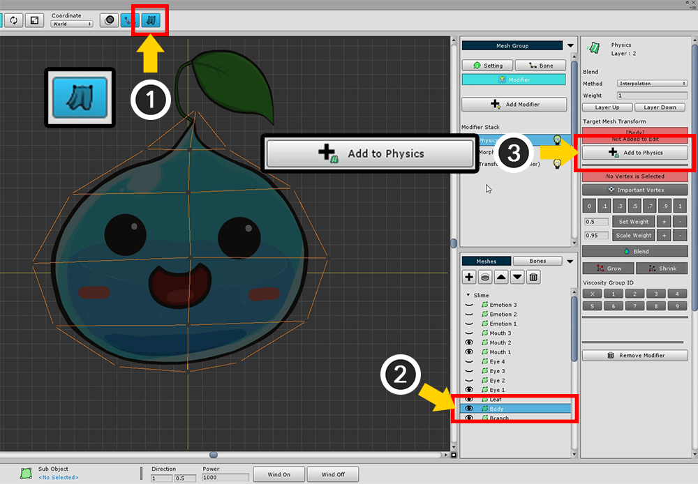
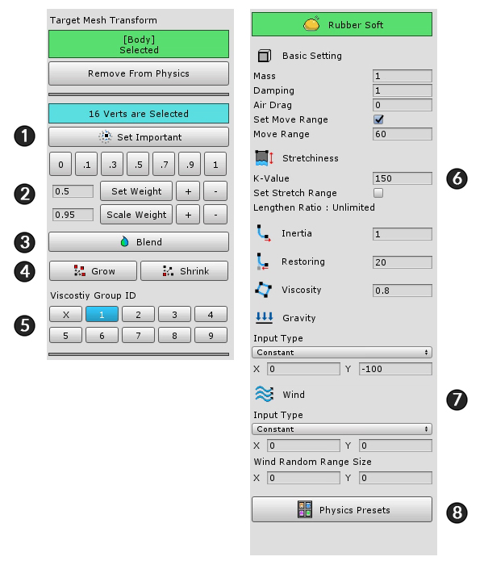
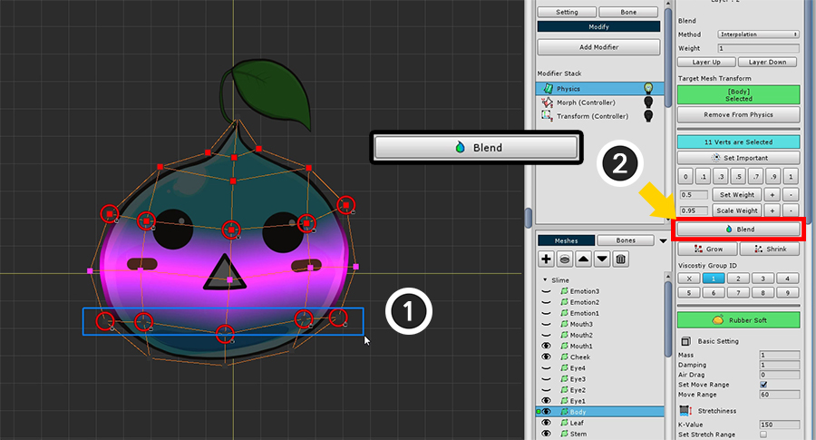
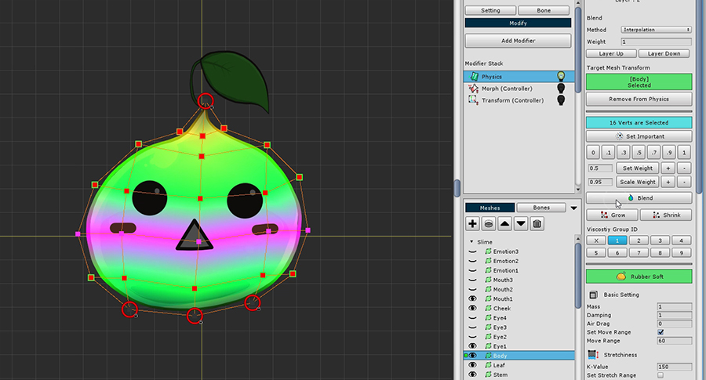

AnyPortrait > Getting Started > 1.9. Adding Physical Effects
1.9. Adding Physical Effects
1.0.0
There is a modifier that gives a physical effect.
You can add interesting effects by expressing tension and inertia.
To set the physical effects, you need to know the theory and make various settings,
On this page, you will learn how to apply prebuilt physical materials to make them easier to apply.

Add a Physic modifier.

Before you set up a physical effect, make sure that no physical effects are applied in the workspace.
You can (1) turn on / off the physics effect setting at the top of the screen.
(2) Select the slime body mesh (3) Press the Add to Physics button.

Press the Start Editing button to turn on edit mode.
You can modify vertex weights with edit mode on.

Before setting the physical material, Select all vertices and set the ID of the Viscosity Group to 1.
This is because viscous forces are applied between the vertices sharing the viscous group ID.

Setting physical materials is a difficult task.
At this stage, we will select a pre-created preset.
The Physics Presets button is on the right side of the UI. Click it to open the Physical Preset dialog.
The screen configuration of the physical preset dialog box is as follows.
1. Save current physical setting as preset : Save the physical setting value of the selected mesh as a preset. You can specify and save names and icons.
2. Physical Presets : These are the physical presets created by default or added by the user.
3. Selected Physical Preset Values : Detailed setting of the selected physical preset. It can not be modified here, and any user-added presets can be deleted.

Apply the "Rubber Soft" material, which is similar to the slime material.

When physical material is applied, it is set as the above screen.
This page briefly describes the screen configuration only.
1. Set Important : The physics effect is applied around the vertex to which the setting is applied.
2. Weighting tools : These are the tools that specify how much you want to receive the physical effects. It has a value between 0 and 1.
3. Blend : This is a function that smoothes the weight based on the weight of the vertex.
4. Grow / Shrink : Select or exclude more vertices.
5. Viscosity group ID : Specify the viscosity ID for viscosity calculation. It has a value from 1 to 9 and can have multiple values.
6. Physical material settings : Value of physical material. Mass, air resistance, tension, inertia, resilience, and viscosity.
7. Gravity and Wind : Gravity and wind can be set. You can specify a fixed value or use the value of a control parameter.
8. Physics Presets : Presets can be opened or saved by opening dialogs.


(1) Select the vertices in the center, (2) Set the weight to 1.


(1) Select the remaining vertices except the upper and lower endpoints.
(2) Press the Blend button several times to set the weight appropriately.

If the weight is too small or too large, you can increase or decrease it using the weighting tool.

Select some vertices in the middle and press the Set Important button.
Physical effects occur around vertices with the "Important" setting.

Let's see if the set physical effect works properly.
(1) Turn on the physical effects again and see if they work properly.
(2) There is a Wind On / Off buttons for the physical test at the bottom of the screen. Let's test it by pressing it.